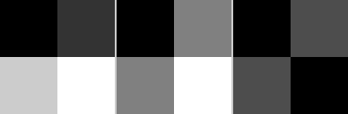
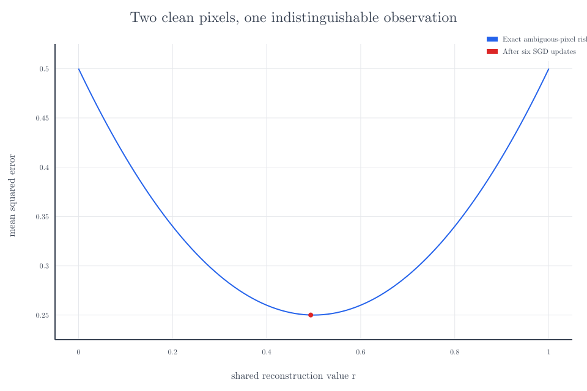
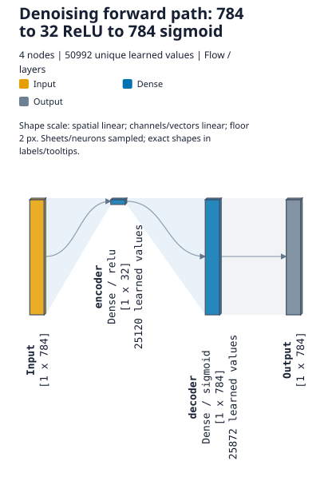
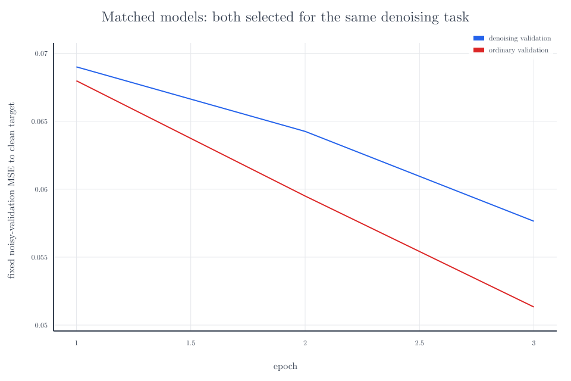
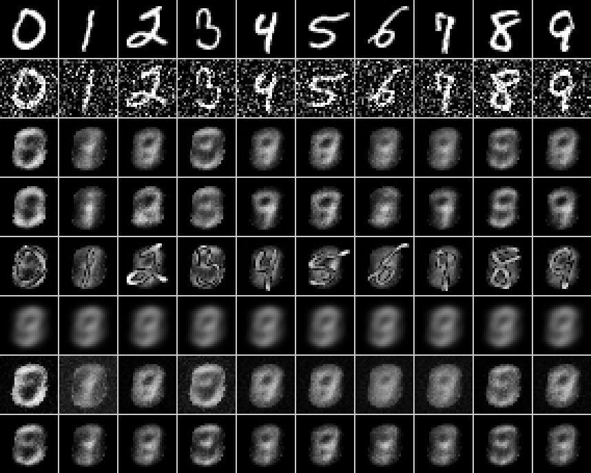

Denoising Autoencoders: Corrupted Inputs, Clean Targets
Abstract
Recovering a clean image from a noisy observation requires assumptions about which image structures are plausible. A denoising autoencoder learns this mapping from corrupted inputs paired with their unchanged clean targets. We derive the squared-error objective, check a four-pixel example and its complete output gradient, and train the original 784–32–784 network on genuine MNIST. A matched ordinary autoencoder receives clean inputs during fitting; both select checkpoints on the same fixed noisy validation task. With three epochs, the denoiser's main held-out MSE is 0.05995, compared with 0.06217 for the raw noisy input and 0.05371 for the ordinary control. At low noise, leaving the input alone is substantially better. These failures remain part of the example.
The method
Let \(X\in[0,1]^d\) be a clean observation. The corruption process samples \(Z\sim\mathcal N(0,I)\) and forms \(Y=\operatorname{clip}(X+sZ,0,1)\). Here \(s\) is in original unit-pixel coordinates, not a fraction of a standardized feature's variance. The implementation evaluates the addition in Float64 with a Float32 coefficient, rounds its result to Float32, then clamps to [0,1]. Clipping is not invertible: values at zero and one may have arisen from many different draws. The corrupted input is detached augmentation data; the clean target is never replaced by it.
The model uses independent dense weights, a ReLU code and sigmoid reconstruction:
An ordinary autoencoder instead fits \(R_\theta(X)\) to \(X\). The denoising objective discourages copying the corruption when the data distribution supplies a better reconstruction rule. It neither guarantees recovery of every image nor implies an advantage over every ordinary bottleneck model in a finite training run. At inference, the function receives only the observed image; a clean target is needed to score a test, not to make its prediction.
#include <dm/dm.hpp>
int main() {
std::filesystem::create_directories("build");
dm::graphics::Diagram d(56, 1100);
d.node("x", {0, 0}, "Clean image X\nPreserved target")
.node("y", {5, 0}, "Corrupted input Y\nAdd Gaussian noise, clip")
.node("r", {10, 0}, "Reconstruction R(Y)\nReLU code, sigmoid pixels")
.node("l", {5, -3}, "Mean squared error\nCompare R(Y) with clean X")
.edge("x", "y")
.edge("y", "r")
.edge("x", "l", "Clean target")
.edge("r", "l", "Prediction")
.text({5, 2}, "Inference follows Y → R(Y), with no clean target")
.save_svg("build/denoising_method.svg");
}
For \(N\) rows and \(d\) pixels, define \(D=2(\hat X-X)\odot\hat X\odot(1-\hat X)/(Nd)\), and \(E=(DW_d^\top)\odot\mathbf1\{YW_e+b_e>0\}\). Then
Only the encoder's input factor changes from the ordinary autoencoder chain rule. The residual always uses the clean target. ReLU's derivative at zero is defined as zero. No derivative of the augmentation is needed to fit these parameters. With a code of width \(k\), forward and reverse passes require \(O(Ndk)\) arithmetic and \(O(dk+N(d+k))\) parameter/activation storage. Fresh augmentation is a Monte Carlo approximation to the expected objective. Nonconvex fitting and a short optimization budget need not approach its population optimum.
Four pixels: the wrong target would make the loss vanish
Take \(X=((0,0.2),(0.8,1))\), \(Z=((-2,1),(-1,2))\) and \(s=0.3\). Before clipping, the approximate values are \((-0.6,0.5,0.5,1.6)\); afterwards they are \((0,0.5,0.5,1)\). If a prediction simply copies this noisy image, its MSE against the clean original is 0.045, while its MSE against the corrupted input is zero. The four clean-target output derivatives are \((0,0.15,-0.15,0)\). This is a target check, not a trained network.
#include <dm/dm.hpp>
int main() {
namespace n = dm::nn;
const auto clean = n::tensor({0., .2, .8, 1.}, {2, 2});
const auto z = n::tensor({-2., 1., -1., 2.}, {1, 2, 2}, n::DType::Float64);
const auto noisy = n::models::CorruptForDenoising(clean, z, .3f);
if (noisy.requires_grad() ||
n::max(n::abs(n::models::CorruptForDenoising(clean, z, 0) - clean)).item() != 0)
return 1;
const auto prediction = noisy.clone().requires_grad_();
const auto loss = n::mse(prediction, clean);
const auto gradient = n::grad(loss, {prediction})[0];
std::print(
"| pixel | clean target | corrupted observation | clean-target derivative "
"|\n|---:|---:|---:|---:|\n");
const auto x = clean.to_vector<float>(), y = noisy.to_vector<float>(),
g = gradient.to_vector<float>();
for (int i = 0; i < 4; ++i) {
if (std::abs(g[i] - (double(y[i]) - x[i]) / 2) > 1e-8)
return 1;
std::print("| {} | {:.6f} | {:.6f} | {:.6f} |\n", i, x[i], y[i], g[i]);
}
if (std::abs(loss.item() - .045) > 2e-8)
return 1;
std::print(
"\nClean-target MSE {:.9f}; noisy-target MSE {:.9f}.\n",
loss.item(),
n::mse(prediction, noisy).item());
std::filesystem::create_directories("build");
n::save_image_grid(
n::stack({clean, noisy, n::abs(noisy - clean)}, 0).reshape({3, 2, 2, 1}),
"build/denoising_toy.png",
3,
0,
1,
2,
.8,
64);
}| pixel | clean target | corrupted observation | clean-target derivative |
|---|---|---|---|
| 0 | 0.000000 | 0.000000 | 0.000000 |
| 1 | 0.200000 | 0.500000 | 0.150000 |
| 2 | 0.800000 | 0.500000 | -0.150000 |
| 3 | 1.000000 | 1.000000 | 0.000000 |
Clean-target MSE 0.045000002; noisy-target MSE 0.000000000.

Checking the theory: ambiguity produces averages
For an observed image \(Y=y\), write \(m(y)=\mathbb E[X\mid Y=y]\). Expanding a square and using \(\mathbb E[X-m(y)\mid Y=y]=0\) gives
Thus an unrestricted squared-error predictor chooses the conditional mean. This is a population statement; a finite bottleneck fit may not reach it. It explains why averaging several plausible clean images can produce blur. It is not a statement that the function inverts clipping or recovers an unknown original exactly.
In a deliberately ambiguous two-observation example, clean scalar pixels 0 and 1 both arrive as 0.5 after corruption. Every deterministic predictor must return the same value \(r\) for both. Its empirical risk is \(\{r^2+(r-1)^2\}/2=(r-0.5)^2+0.25\). The optimum is grey, not either original black or white. Six explicit Float64 SGD updates fit this single shared prediction. The same program checks the seeded Gaussian bank and shows clipping bias near the pixel bounds.
#include <dm/dm.hpp>
int main() {
namespace n = dm::nn;
n::ParameterStore p(1, n::DType::Float64);
const auto prediction = p.get("shared_pixel", {}, n::init::constant(.1));
const auto target = n::tensor({0., 1.}, {2, 1}, n::DType::Float64);
n::OptimizerConfig config;
config.kind = n::OptimizerKind::Sgd;
n::Optimizer optimizer(p, .25, config);
for (int step = 0; step < 6; ++step) {
const auto output = n::broadcast_to(prediction, {2, 1});
optimizer.minimize(n::mse(output, target));
}
const double fitted = prediction.item();
const double risk = n::mse(n::broadcast_to(prediction, {2, 1}), target).item();
if (std::abs(fitted - .49375) > 1e-13 || std::abs(risk - .2500390625) > 1e-13)
return 1;
std::print(
"Six SGD updates: prediction {:.8f}; risk {:.10f}; optimal risk 0.25.\n\n", fitted, risk);
const auto bank = n::models::GaussianNoise({100000, 1}, 1, 5489);
if (bank.to_vector<double>() !=
n::models::GaussianNoise({100000, 1}, 1, 5489).to_vector<double>())
return 1;
const double mean = n::mean(bank).item();
const double variance = n::mean(n::square(bank)).item() - mean * mean;
if (std::abs(mean) > .015 || std::abs(variance - 1) > .02)
return 1;
std::print("100,000 standard draws: mean {:.6f}; variance {:.6f}.\n\n", mean, variance);
std::print("| clean constant pixel | mean corrupted pixel, sigma 0.35 |\n|---:|---:|\n");
for (double value : {0., .5, 1.})
std::print(
"| {:.1f} | {:.6f} |\n",
value,
n::mean(n::models::CorruptForDenoising(n::full({100000, 1}, value), bank, .35f)).item());
std::vector<double> values, risks;
for (int i = 0; i <= 100; ++i) {
const double r = double(i) / 100;
values.push_back(r);
risks.push_back((r - .5) * (r - .5) + .25);
}
std::filesystem::create_directories("build");
auto plot = dm::graphics::RPlot::create();
plot.lines(values, risks, "Exact ambiguous-pixel risk", {37, 99, 235}, 2.)
.points({fitted}, {risk}, "After six SGD updates", {220, 38, 38})
.x_label("shared reconstruction value r")
.y_label("mean squared error")
.title("Two clean pixels, one indistinguishable observation")
.save_svg("build/denoising_conditional_risk.svg");
}Six SGD updates: prediction 0.49375000; risk 0.2500390625; optimal risk 0.25.
100,000 standard draws: mean 0.001660; variance 1.003311.
| clean constant pixel | mean corrupted pixel, sigma 0.35 |
|---|---|
| 0.0 | 0.139994 |
| 0.5 | 0.500481 |
| 1.0 | 0.860566 |

The positive mean at clean zero and negative mean shift at clean one follow from clipping, not from a nonzero Gaussian mean. A clipped observation's error distribution depends on its clean value. A formula for unbounded additive Gaussian observations cannot simply be substituted for this clipped corruption process.
The original network, executed
The model is the same strict undercomplete network as the [undercomplete example](undercomplete_autoencoder.mepml): 784 inputs, 32 ReLU code values and 784 sigmoid outputs. Its independent encoder and decoder contain 50,992 scalars in four tensors. It uses Glorot-uniform weights and zero biases. Denoising changes the training pairs and loss target, not this architecture. The single-image trace uses Flow style and layer detail, shared linear shape scales, a two-pixel visibility floor and at most six sampled planes. The symbols represent tensors rather than individually drawn neurons. This probe is not another fit.
#include <dm/dm.hpp>
int main() {
namespace n = dm::nn;
n::ParameterStore p(1657);
n::Module model(
[&](const n::Tensor& input) {
return n::models::UndercompleteAutoencoder(p, input).reconstruction;
},
"Denoising forward path: 784 to 32 ReLU to 784 sigmoid");
n::ModelPlotOptions options;
options.style = n::ModelPlotStyle::Flow;
options.detail = n::ModelPlotDetail::Layers;
options.sizing.spatial_scale = n::ModelPlotScale::Linear;
options.sizing.channel_scale = n::ModelPlotScale::Linear;
options.sizing.minimum_extent = 2;
options.sizing.max_planes = 6;
const auto figure = model.plot(n::zeros({1, 784}), options);
if (p.count() != 50992 || p.size() != 4 || figure.parameter_count() != 50992)
return 1;
std::filesystem::create_directories("build");
figure.save_svg("build/denoising_architecture.svg");
std::print(
"{} learned tensors; {} learned scalars. Inference takes the observed image only.\n",
p.size(),
p.count());
}4 learned tensors; 50992 learned scalars. Inference takes the observed image only.

Genuine MNIST and explicit noise banks
The native dataset API prepares 1,000 fitting, 200 validation and 200 held-out MNIST images, with equal class counts in each pool. It retains the official original IDs, disjoint fitting and validation rows from the original training split and held-out rows from the original test split. Labels only order the gallery. Images are Float32 NHWC [N,28,28,1] in [0,1]. The code saves the manifest, clean pools, source IDs and all fixed evaluation banks.
Validation uses seed 1709, the main test seed 1711 and the second test seed 1717. The main noise
level is Float32 0.35. Low (0.15) and strong (0.6) cases reuse the main test's standard draws,
so only amplitude changes. Clean inputs have sigma zero. Independent local MT19937 engines
and explicit cosine/sine Box-Muller pairs preserve the source stream; these differ from the
library's ordinary normal sampler. No Python preparation or framework training is involved.
#include <dm/dm.hpp>
int main() {
namespace n = dm::nn;
std::filesystem::create_directories("build");
const std::filesystem::path cache = dm::datasets::data_home();
dm::datasets::prepare_example_data("mnist-assets", cache.string());
const auto pools = n::models::LoadSaliency(cache / "saliency");
const auto validation_bank = n::models::GaussianNoise(pools[1].images.shape(), 1, 1709);
const auto test_bank = n::models::GaussianNoise(pools[2].images.shape(), 1, 1711);
const auto second_bank = n::models::GaussianNoise(pools[2].images.shape(), 1, 1717);
const auto validation = n::models::CorruptForDenoising(pools[1].images, validation_bank, .35f);
const auto test = n::models::CorruptForDenoising(pools[2].images, test_bank, .35f);
n::save_npz(
"build/denoising_data.npz",
{{"fit_images", pools[0].images},
{"validation_images", pools[1].images},
{"test_images", pools[2].images},
{"fit_source_ids", pools[0].source},
{"validation_source_ids", pools[1].source},
{"test_source_ids", pools[2].source},
{"test_labels", pools[2].labels},
{"validation_standard_noise", validation_bank},
{"test_standard_noise", test_bank},
{"second_standard_noise", second_bank},
{"validation_corrupted", validation},
{"test_corrupted", test},
{"test_low", n::models::CorruptForDenoising(pools[2].images, test_bank, .15f)},
{"test_strong", n::models::CorruptForDenoising(pools[2].images, test_bank, .6f)},
{"test_second", n::models::CorruptForDenoising(pools[2].images, second_bank, .35f)}});
std::filesystem::copy_file(
cache / "saliency" / "manifest.json",
"build/denoising_data_manifest.json",
std::filesystem::copy_options::overwrite_existing);
std::print("| pool | images | pixels per image | examples per digit |\n|---|---:|---:|---:|\n");
for (int i = 0; i < 3; ++i)
std::print(
"| {} | {} | 784 | {} |\n",
i == 0 ? "fit"
: i == 1 ? "validation"
: "test",
pools[i].images.size(0),
pools[i].images.size(0) / 10);
}| pool | images | pixels per image | examples per digit |
|---|---|---|---|
| fit | 1000 | 784 | 100 |
| validation | 200 | 784 | 20 |
| test | 200 | 784 | 20 |
Two matched fits, with every update visible
Both stores start from seed 1657, and their four initial tensors are checked for exact agreement. Each model makes 96 Adam updates: three epochs, batch size 32, all 1,000 records once per epoch, including a final batch of eight. Batch seed 1663 gives matched row order. Adam uses learning rate 0.003, moments 0.9/0.999 and epsilon 1e-8. The denoiser receives fresh full-pool corruption from seeds 1672, 1673 and 1674. The ordinary control always receives clean inputs. Every target is the clean original, including for the denoiser.
Both select their own checkpoint using the same fixed noisy validation inputs and clean targets; the ordinary model is therefore selected for this denoising task rather than for clean reconstruction. Validation selection uses the source's Float32 tensor MSE; held-out reporting later accumulates errors in Float64. Fitting losses below are measured before each update and validation losses after each epoch. Gradient norms, first batches and all parameter snapshots are saved. No optimizer loop is hidden in a model helper.
#include <dm/dm.hpp>
int main() {
namespace n = dm::nn;
std::map<std::string, n::Tensor> data;
for (const auto& [name, value] : n::load_npz("build/denoising_data.npz"))
data.emplace(name, value);
const auto fit = data.at("fit_images");
const auto validation = data.at("validation_corrupted").reshape({200, 784});
const auto validation_target = data.at("validation_images").reshape({200, 784});
std::vector<double> matched_initial;
auto plot = dm::graphics::RPlot::create();
std::vector<std::string> gradient_notes;
std::print(
"| fit | epoch | fitting pre-update clean-target MSE | fixed noisy-validation MSE "
"|\n|---|---:|---:|---:|\n");
for (const std::string variant : {"denoising", "ordinary"}) {
const std::string prefix = "build/denoising_" + variant;
n::ParameterStore p(1657);
{
n::NoGradGuard guard;
n::models::UndercompleteAutoencoder(p, n::zeros({1, 784}));
}
if (variant == "denoising")
matched_initial = p.flatten();
else if (matched_initial != p.flatten())
return 1;
p.save(prefix + "_initial.npz");
n::OptimizerConfig config;
config.kind = n::OptimizerKind::Adam;
n::Optimizer optimizer(p, .003, config);
n::BatchOrder batches(1000, 32, 1663);
double best = std::numeric_limits<double>::infinity();
int selected = 0, updates = 0;
std::vector<double> epochs, valid;
for (int epoch = 1; epoch <= 3; ++epoch) {
n::Tensor corrupted;
if (variant == "denoising") {
const auto bank = n::models::GaussianNoise(fit.shape(), 1, std::uint32_t(1671 + epoch));
corrupted = n::models::CorruptForDenoising(fit, bank, .35f);
n::save_npz(
"build/denoising_train_epoch" + std::to_string(epoch) + ".npz",
{{"standard_noise", bank}, {"corrupted", corrupted}});
}
batches.begin_epoch();
double total = 0;
int seen = 0;
for (;;) {
const auto rows = batches.next();
if (rows.empty())
break;
const auto clean = n::take_rows(fit, rows);
const auto input = variant == "ordinary" ? clean : n::take_rows(corrupted, rows);
const auto net =
n::models::UndercompleteAutoencoder(p, input.reshape({input.size(0), 784}));
const auto objective = n::mse(net.reconstruction, clean.reshape({clean.size(0), 784}));
if (updates == 0) {
n::GradOptions keep;
keep.retain_graph = true;
const auto gradients = n::grad(objective, p.parameters(), keep);
n::NamedTensors arrays;
for (std::size_t i = 0; i < gradients.size(); ++i) {
const double norm = n::sqrt(n::sum(n::square(gradients[i]))).item();
if (!std::isfinite(norm) || norm <= 0)
return 1;
arrays.emplace_back(p.names()[i], gradients[i]);
gradient_notes.push_back(
std::format("| {} | {} | {:.8f} |\n", variant, p.names()[i], norm));
}
n::save_npz(prefix + "_first_gradients.npz", arrays);
n::save_npz(prefix + "_first_batch.npz", {{"input", input}, {"clean_target", clean}});
}
const double value = objective.item();
if (!std::isfinite(value) || value < 0)
return 1;
total += rows.size() * value;
seen += int(rows.size());
optimizer.minimize(objective);
if (updates == 0)
p.save(prefix + "_first_update.npz");
++updates;
}
n::NoGradGuard guard;
const double score =
n::mse(
n::models::UndercompleteAutoencoder(p, validation).reconstruction, validation_target)
.item();
if (seen != 1000 || !std::isfinite(score))
return 1;
p.save(prefix + "_epoch" + std::to_string(epoch) + ".npz");
if (score < best) {
best = score;
selected = epoch;
p.save(prefix + "_best.npz");
}
epochs.push_back(epoch);
valid.push_back(score);
std::print("| {} | {} | {:.9f} | {:.9f} |\n", variant, epoch, total / seen, score);
}
if (updates != 96 || p.count() != 50992)
return 1;
n::save_npz(
prefix + "_selection.npz",
{{"epoch", n::full({}, selected, n::DType::Int32)},
{"validation_mse", n::full({}, best, n::DType::Float64)}});
plot.lines(
epochs,
valid,
variant + " validation",
variant == "denoising" ? dm::graphics::RGB{37, 99, 235} : dm::graphics::RGB{220, 38, 38},
2.);
}
std::print("\n| fit | parameter | first gradient L2 norm |\n|---|---|---:|\n");
for (const auto& line : gradient_notes)
std::print("{}", line);
plot.x_label("epoch")
.y_label("fixed noisy-validation MSE to clean target")
.title("Matched models: both selected for the same denoising task")
.save_svg("build/denoising_learning.svg");
}| fit | epoch | fitting pre-update clean-target MSE | fixed noisy-validation MSE |
|---|---|---|---|
| denoising | 1 | 0.108331573 | 0.069000944 |
| denoising | 2 | 0.070445193 | 0.064252168 |
| denoising | 3 | 0.064372182 | 0.057641771 |
| ordinary | 1 | 0.110654088 | 0.067978129 |
| ordinary | 2 | 0.065757466 | 0.059495557 |
| ordinary | 3 | 0.055960271 | 0.051331125 |
| fit | parameter | first gradient L2 norm |
|---|---|---|
| denoising | encoder/W | 0.00998684 |
| denoising | encoder/b | 0.00133143 |
| denoising | decoder/W | 0.01424840 |
| denoising | decoder/b | 0.00732623 |
| ordinary | encoder/W | 0.00779895 |
| ordinary | encoder/b | 0.00128825 |
| ordinary | decoder/W | 0.01079268 |
| ordinary | decoder/b | 0.00732713 |

Held-out amplitudes, an independent noise draw and deployment checks
The selected parameters are restored into fresh stores. Both functions receive only an input image during prediction. Exact encode/decode and repeated-call comparisons, single-versus-batch parity and immutable stored weights are checked. The fitting pixel mean is a constant baseline estimated using fitting pixels only. For each input condition, all predictors are scored against the same clean held-out images. Test results never change the selected checkpoints.
#include <dm/dm.hpp>
int main() {
namespace n = dm::nn;
std::map<std::string, n::Tensor> a;
for (const auto& [name, value] : n::load_npz("build/denoising_data.npz"))
a.emplace(name, value);
const auto clean = a.at("test_images").reshape({200, 784});
const auto mean = n::broadcast_to(
n::cast(
n::mean(n::cast(a.at("fit_images").reshape({1000, 784}), n::DType::Float64), {0}, true),
n::DType::Float32),
clean.shape());
n::ParameterStore denoising(1657), ordinary(1657);
denoising.load("build/denoising_denoising_best.npz", false);
ordinary.load("build/denoising_ordinary_best.npz", false);
const auto before = denoising.flatten(), ordinary_before = ordinary.flatten();
n::NoGradGuard guard;
n::NamedTensors outputs{{"mean", mean}};
std::print(
"| input case | raw input MSE | noise-trained MSE | ordinary AE MSE "
"|\n|---|---:|---:|---:|\n");
for (const auto& [name, key] : std::vector<std::pair<std::string, std::string>>{
{"clean", "test_images"},
{"low", "test_low"},
{"noisy", "test_corrupted"},
{"second", "test_second"},
{"strong", "test_strong"}}) {
const auto input = a.at(key).reshape({200, 784});
const auto d = n::models::UndercompleteAutoencoder(denoising, input);
const auto o = n::models::UndercompleteAutoencoder(ordinary, input);
const double raw =
n::mse(n::cast(input, n::DType::Float64), n::cast(clean, n::DType::Float64)).item();
const double score =
n::mse(n::cast(d.reconstruction, n::DType::Float64), n::cast(clean, n::DType::Float64))
.item();
const double control =
n::mse(n::cast(o.reconstruction, n::DType::Float64), n::cast(clean, n::DType::Float64))
.item();
std::print("| {} | {:.9f} | {:.9f} | {:.9f} |\n", name, raw, score, control);
outputs.emplace_back(name + "_denoising_code", d.code);
outputs.emplace_back(name + "_denoising_reconstruction", d.reconstruction);
outputs.emplace_back(name + "_ordinary_reconstruction", o.reconstruction);
const auto repeat = n::models::UndercompleteAutoencoder(denoising, input);
const auto single = n::models::UndercompleteAutoencoder(denoising, n::take_rows(input, {0}));
const auto decoded = n::dense(denoising, "decoder", d.code, 784, n::Activation::Sigmoid);
if (n::max(n::abs(repeat.reconstruction - d.reconstruction)).item() != 0 ||
n::max(n::abs(decoded - d.reconstruction)).item() != 0 ||
n::max(n::abs(single.reconstruction - n::take_rows(d.reconstruction, {0}))).item() > 1e-6)
return 1;
}
if (before != denoising.flatten() || ordinary_before != ordinary.flatten())
return 1;
n::save_npz("build/denoising_outputs.npz", outputs);
std::print(
"\nFitting-mean MSE {:.9f}. Fresh restore, target-free inference, exact decode/repeat and "
"immutable weights pass.\n",
n::mse(n::cast(mean, n::DType::Float64), n::cast(clean, n::DType::Float64)).item());
}| input case | raw input MSE | noise-trained MSE | ordinary AE MSE |
|---|---|---|---|
| clean | 0.000000000 | 0.064962645 | 0.050512425 |
| low | 0.012016544 | 0.061015408 | 0.051245820 |
| noisy | 0.062168205 | 0.059952738 | 0.053709699 |
| second | 0.062143021 | 0.060118123 | 0.053859845 |
| strong | 0.149556864 | 0.062646353 | 0.058082961 |
Fitting-mean MSE 0.067798074. Fresh restore, target-free inference, exact decode/repeat and immutable weights pass.
Both models select epoch 3. On the main noisy input the denoiser's MSE 0.05995 is about 3.6% below the raw input's 0.06217, but the ordinary control is better at 0.05371. With low noise, the raw input's MSE 0.01202 is far below either reconstruction's error. With no corruption, the denoiser changes a perfect observation into an approximation with MSE 0.06496. Stronger noise gives the denoiser an advantage over leaving input unchanged, but the ordinary control still scores lower. The second independent draw produces similar, not identical, scores. Two test noise seeds do not estimate variability across training seeds. These are outcomes of a short fixed-budget experiment; they do not disprove the population objective or show a general advantage for either training scheme.
The gallery retains those limits. Columns show the first held-out example of each digit 0–9, without quality filtering. Rows are clean original, main corruption, denoised, ordinary control on the same corruption, absolute denoising error, fitting mean, denoiser on clean input and denoiser on strong corruption. Every panel uses grayscale [0,1]; errors are not amplified.
#include <dm/dm.hpp>
int main() {
namespace n = dm::nn;
std::map<std::string, n::Tensor> data, out;
for (const auto& [name, value] : n::load_npz("build/denoising_data.npz"))
data.emplace(name, value);
for (const auto& [name, value] : n::load_npz("build/denoising_outputs.npz"))
out.emplace(name, value);
const auto labels = data.at("test_labels").to_vector<int>();
const auto ids = data.at("test_source_ids").to_vector<int>();
std::vector<std::int64_t> rows;
for (int digit = 0; digit < 10; ++digit) {
const auto found = std::find(labels.begin(), labels.end(), digit);
if (found == labels.end())
return 1;
rows.push_back(found - labels.begin());
}
const auto clean = data.at("test_images").reshape({200, 784});
const auto denoised = out.at("noisy_denoising_reconstruction");
std::vector<n::Tensor> panels;
for (const auto& values : std::vector<n::Tensor>{
clean,
data.at("test_corrupted").reshape({200, 784}),
denoised,
out.at("noisy_ordinary_reconstruction"),
n::abs(denoised - clean),
out.at("mean"),
out.at("clean_denoising_reconstruction"),
out.at("strong_denoising_reconstruction")})
panels.push_back(n::take_rows(values, rows));
n::save_image_grid(
n::concat(panels, 0).reshape({80, 28, 28, 1}),
"build/denoising_reconstructions.png",
10,
0,
1,
2,
.8,
3);
std::print("| digit | official source ID |\n|---:|---:|\n");
for (int digit = 0; digit < 10; ++digit)
std::print("| {} | {} |\n", digit, ids[rows[digit]]);
}| digit | official source ID |
|---|---|
| 0 | 66921 |
| 1 | 63380 |
| 2 | 68936 |
| 3 | 62280 |
| 4 | 62094 |
| 5 | 65222 |
| 6 | 61209 |
| 7 | 61721 |
| 8 | 69402 |
| 9 | 62570 |

The optional development oracle scripts/check_denoising_autoencoder.py reads the native
archives without preparing data or fitting. Its independent NumPy reference checks all
2,822,400 standard Gaussian values (maximum difference below 4.5e-16), all 3,136,000 corrupted
pixels bit for bit, both sets of 50,992 first-batch parameter derivatives (errors below 7e-11)
and both Float32 first Adam updates bit for bit. Across five test conditions and both models,
all 1,568,000 reconstruction pixels agree within 5.4e-7. Twelve parameter snapshots, both first
batches/gradients, the clean/noisy data, all three training corruptions and all original test
outputs also match an execution of the original C++ example exactly.
Conclusion
The defining distinction is the target: corrupted inputs are scored against their clean originals. A conditional-mean optimum explains why pixel MSE can favour smooth averages when observations are ambiguous. Exact noise banks, visible optimizer updates and matched initialization/order make this experiment reproducible, while independent validation selection keeps test cases for evaluation. This small three-epoch denoiser offers only a modest main-noise improvement over leaving the input unchanged; it loses to its ordinary control and damages lightly corrupted images. One noise family, a small fitting pool and one training seed do not establish universal denoising, semantic code quality, a generative image prior, classification accuracy or a compressed-file bit rate.
References
- Vincent, P., Larochelle, H., Bengio, Y. and Manzagol, P.-A. (2008). Extracting and Composing Robust Features with Denoising Autoencoders. [ICML paper](https://www.cs.toronto.edu/~larocheh/publications/icml-2008-denoising-autoencoders.pdf), [DOI](https://doi.org/10.1145/1390156.1390294). The present example uses a ReLU bottleneck, untied weights, clipped Gaussian corruption and pixel MSE rather than reproducing the paper's masking-noise benchmark.
- Box, G. E. P. and Muller, M. E. (1958). A Note on the Generation of Random Normal Deviates. [Annals of Mathematical Statistics 29(2), 610–611](https://doi.org/10.1214/aoms/1177706645).
- LeCun, Y., Bottou, L., Bengio, Y. and Haffner, P. (1998). Gradient-based learning applied to document recognition. [Proceedings of the IEEE 86(11), 2278–2324](https://doi.org/10.1109/5.726791).